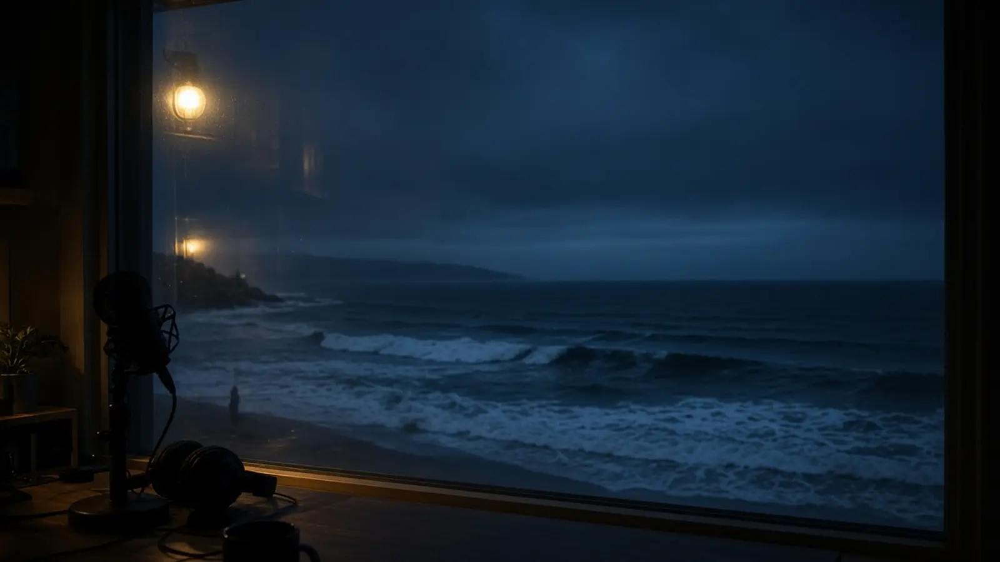
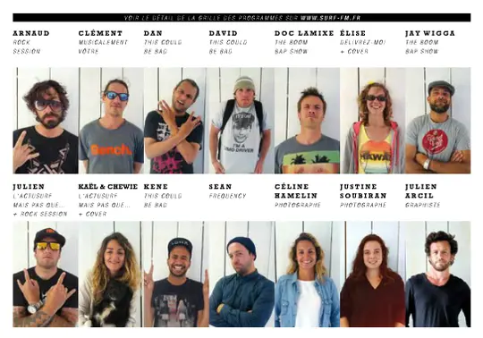
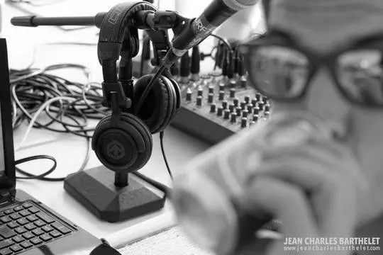

Programmes
Émissions & grille
Ce qui passe maintenant, ce qui arrive ensuite, et les voix qui font Surf FM.
Grille de la semaine
Sur l'antenne, heure par heure
grille d'exemple Créneaux et horaires à remplacer par la vraie grille de Surf FM.
Faites glisser la frise · heure de Paris
Les émissions
Neuf émissions, une même antenne
D'après le trombinoscope de l'équipe en 2015. à mettre à jour Descriptions et horaires à compléter avec l'équipe actuelle.
L'équipe
Toute l'équipe sur une planche
Animateurs, photographes et graphiste : le trombinoscope de 2015 réunissait toute l'équipe sur une même planche. Survolez la photo pour l'agrandir.
- Arnaud Rock Session
- Clément Musicalement vôtre, Cover
- Dan, David, Kene This Could Be Bad
- Doc Lamixe, Jay Wigga The Boom Rap Show
- Élise Délivrez-moi, Cover
- Julien, Kaël & Chewie L'Actusurf
- Sean Frequency
- Céline Hamelin, Justine Soubiran Photographes
- Julien Arcil Graphiste


Proposer une émission
Votre son à l'antenne
Une passion, une sélection musicale, une actu glisse à raconter ? L'équipe accompagne les nouveaux animateurs, de la préparation à la technique.
Devenir bénévole